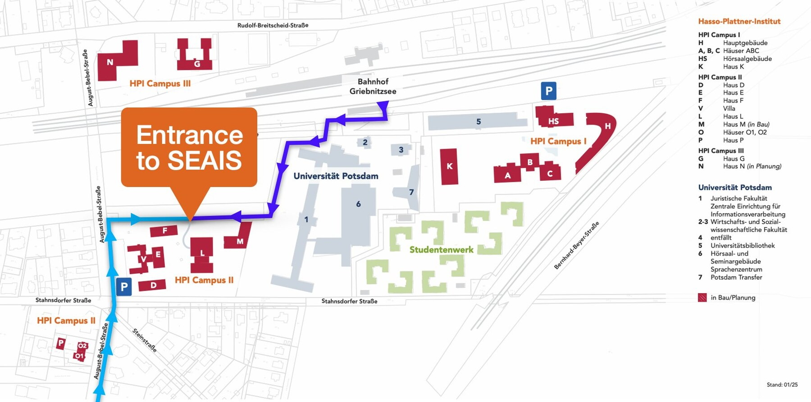

SEAIS brings ~30 leading researchers in software engineering and AI together with ~30 experienced practitioners and ~30 ambitious students to reflect on the state of the art in (human-centered) software engineering and AI, and to co-shape its future.
The symposium is held with the generous support of the Hasso Plattner Institute and its Chair for Software Engineering and AI. Participaction is by invite only.
The symposium takes place at the Hasso Plattner Institute in Potsdam. Most sessions are held in House L (Campus II), ground floor, across Lecture Hall L-E.03, the Event Space, and the cantine with terrace (see map below).
Construction work on campus:
Access to House L is currently only possible via the north side of Campus II. Please follow the path shown below.

The symposium accommodation is the Hampton by Hilton Potsdam Babelsberg, a pleasant 15–20 minute walk from the venue.
Main host